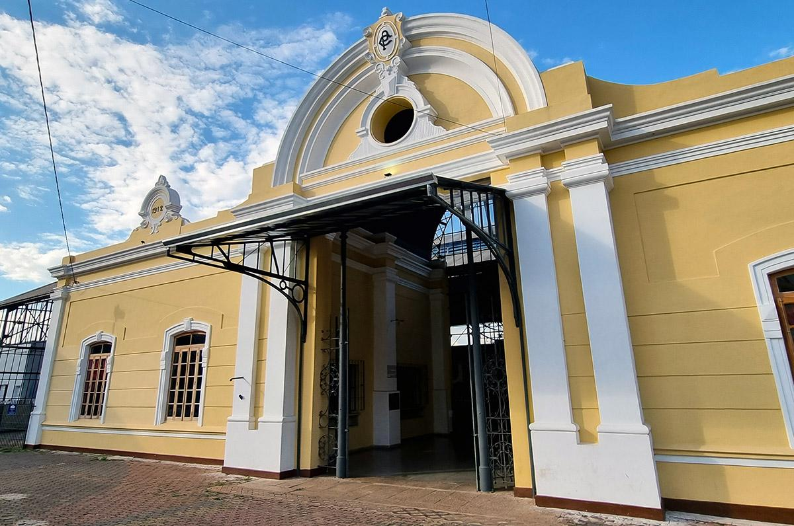
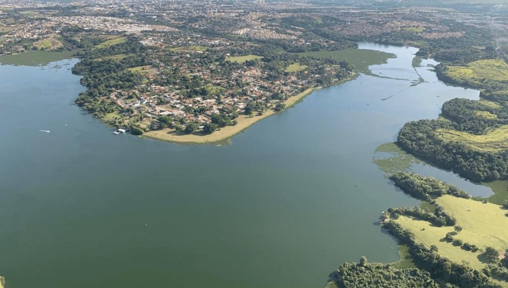

Espaço histórico de Americana que preserva a memória ferroviária e promove atividades culturais
Veja Mais!Igreja tradicional de Americana, conhecida por sua arquitetura marcante e importância histórica
Veja Mais!
Ponto turístico de Americana com belas paisagens, ideal para apreciar a natureza e o pôr do sol
Veja Mais!